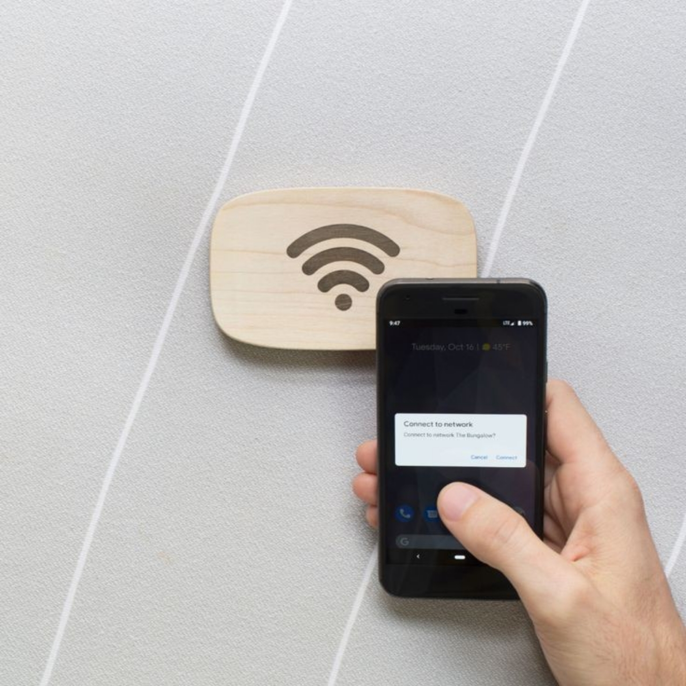
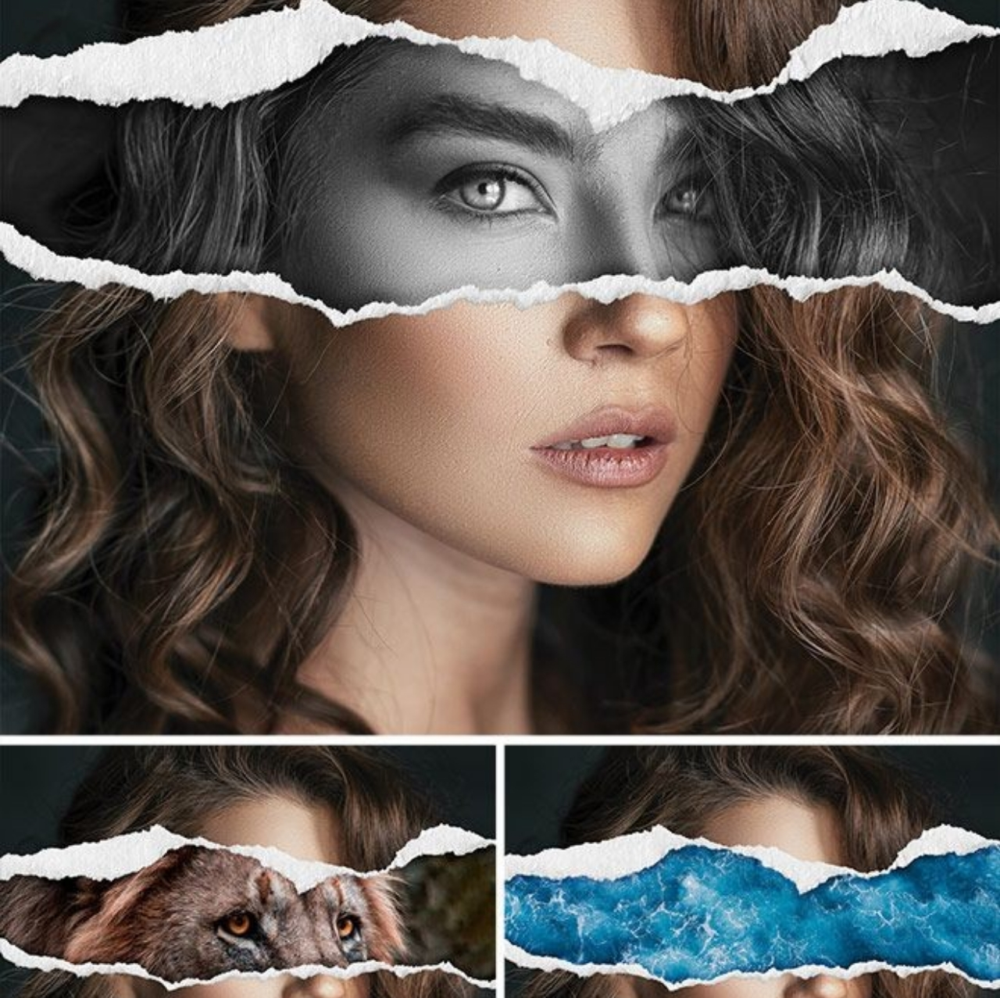

my skills

Networking

Programing

tahun pengalaman
teman saya bahagia
proyek selesai
sertifikasi
ini pertama kalinya saya mengetahui apa itu komputer, sejarah komputer, dan tahu dasar cara menggunakan komputer pertama kali nya.
lalu saya mengembangkan pengetahuan saya tentang komputer dengan memahani nya lebih lanjut.
Saya memutuskan untuk sedikit demi sedikit belajar bahasa inggris karena bahasa yang dipakai di komputer serta artikel-artikel di internet yang berhubungan dengan IT banyak menggunakan bahasa inggris.
Pertama kalinya saya mengenal dan mencoba belajar desin grafis saya kangsung ketagihan. banyak hal yang bisa saya lakukan dengan imajinasi saya dan mewujudkannya menjadi sebuah tampilan grafis. dengan begitu saya bisa terus mengembangkan kreativitas saya.
Saya belajar tentang jaringan. semua di mulai ketika saya PKL (Praktik Kerja Lapangan) yang mana itu adalah salah satu kegiatan yang di lakukan setiap siswa SMK (Sekolah Menengah Kejuruan).
di fase terakhir sekarang ini, saya akan terus mengembangkan aoa yang telah saya pelajari selama ini. dan saya memutuskan juga untuk mempelajari programing yang mana salah satu hasil dari programing saya adalah website ini.